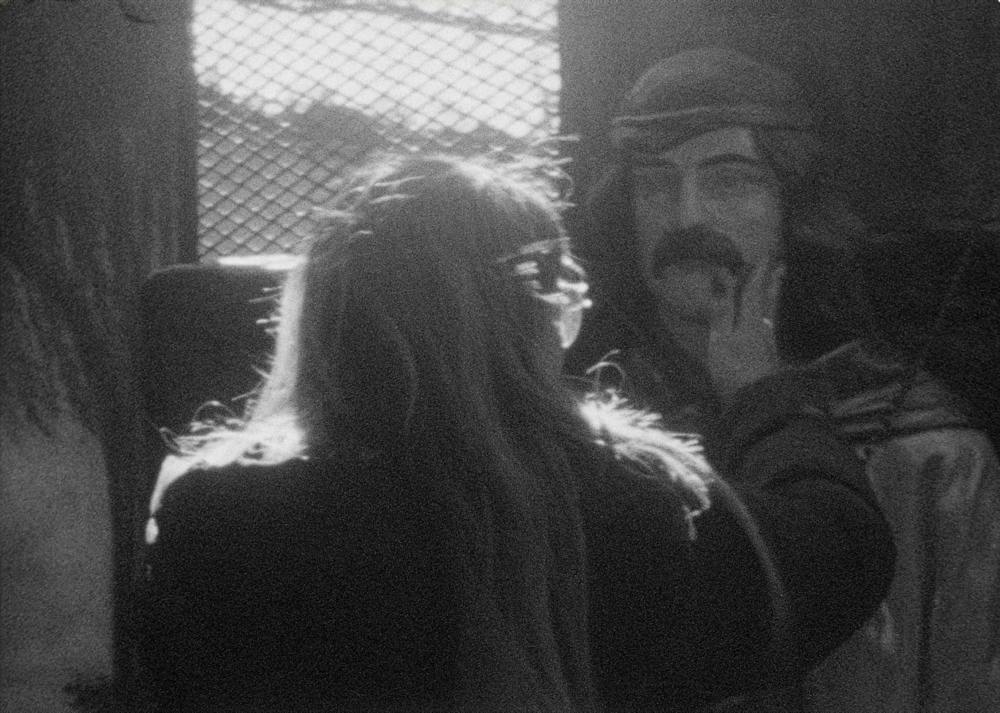

The Coldest Summer
The coldest summer I ever spent was a winter in Buenos Aires... This July, I gave a talk at the University of San Martín about the history of the moving image in ethnographic fieldwork and my own visual anthropological practice.
I stayed for two months, and while there became curious about the popular saint Gauchito Gil, a tragic hero from the northeastern Argentinian province of Corrientes, who is venerated in thousands of blood-red shrines across the country—on the road, in cemeteries, in people's homes. The Gauchito Gil story is, in part, the late nineteenth-century tale of a military deserter who, moments before his execution, told a policeman that his ill son would be cured if he prayed for him, the man he was about to execute. The policeman prayed for Gauchito Gil, slit his throat and hung him from a tree—then, when his son had healed, built him a shrine. In Mariana Enríquez's short story “El chico sucio” (The Dirty Kid), she explains: “The gaucho brings luck, heals, helps, and doesn't ask for much in return, just that these tributes be paid to him and, sometimes, [with] a little bit of alcohol.” (2016, 17, translation mine).
I have researched the lived experience of people who pray to local saints before, following Tunisians, both Muslims and Jews, on similar sorts of pilgrimages. From Tunisia to Argentina, people journey to pray for any number of reasons, with requests that speak to injuries of class, faith in the possibility of miracles, and a willingness to ask for spiritual intervention. Now, after leaving Buenos Aires, I am returning to Super 8 footage I shot of an August pilgrimage to a Gauchito Gil shrine on the southern outskirts of Buenos Aires: the offering of alcohol and cigarettes, the lighting of candles, individual prayers made in a crowd. New directions that are in fact old directions in new places.
